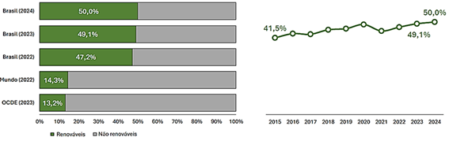
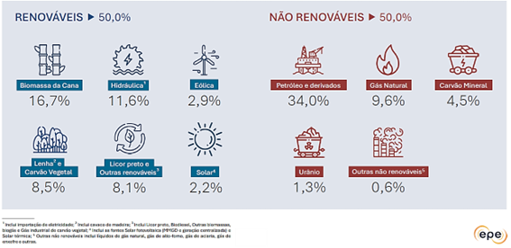
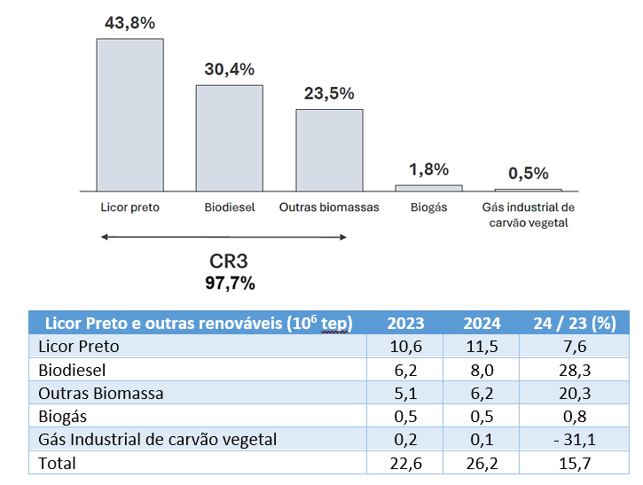
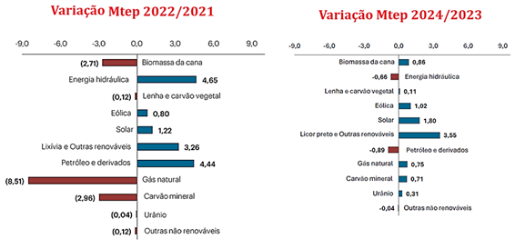
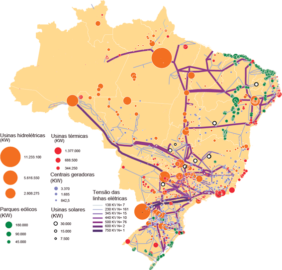
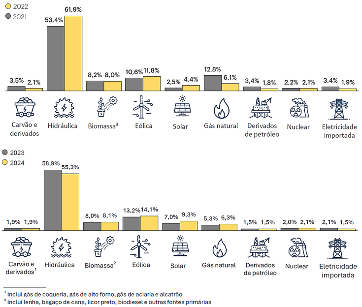
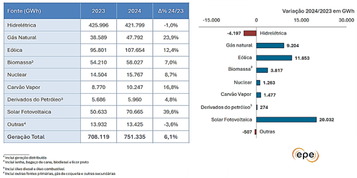
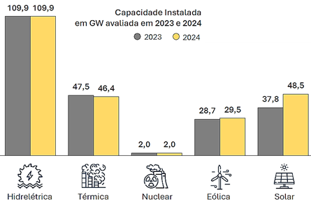
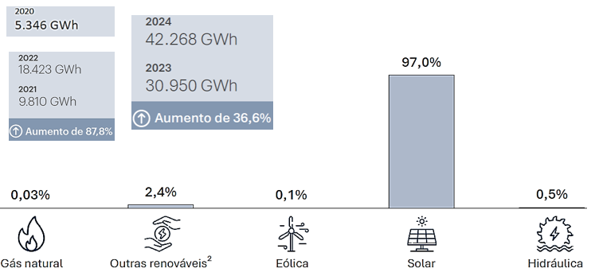
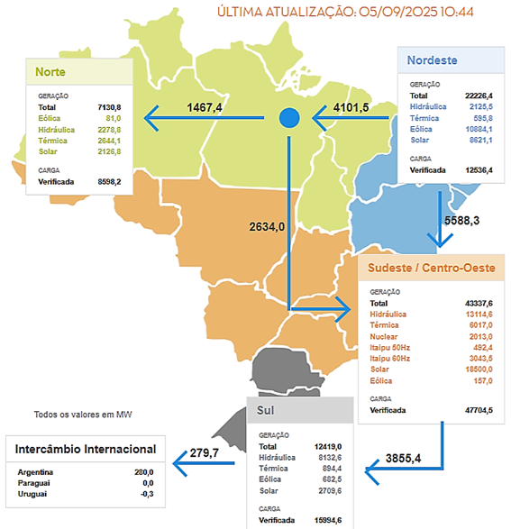

HIDROGÊNIO NO CONTEXTO DA TRANSIÇÃO ENERGÉTICA
Última Atualização: 23 de março de 2026
CAPÍTULO 1 MATRIZ ELÉTRICA E ENERGÉTICA NACIONAL E MUNDIAL
1.1 Consumo Final de Energia na Indústria
Segundo Balanço Energético Nacional de 2025, publicado pela Empresa de Pesquisa Energética (EPE), o Brasil teve um acréscimo de 1,2 milhões de TEP (toneladas equivalentes de petróleo) em valores absolutos (em 2024 foram 1,3 milhões de TEP). Os setores que aumentaram foram: eletricidade (4,1%), carvão mineral e derivados (3,5%), lenha e carvão vegetal (2,1%). Por outro lado, aqueles que reduziram foram: bagaço de cana (3,3%), óleo combustível (17,4%). Por outro lado, houve um aumento de 5,2% no uso de licor petro em função do crescimento de 5,2% da produção de celulose.
Com exceção dos segmentos de Química, Cimento, Ferroligas e Alimentos e Bebidas, com quedas de 0,6%; 1,1%; 1,9% e 2,1% respectivamente, todos os demais segmentos registraram aumento de consumo em 2024. A renovabilidade da indústria ficou em 64,4%.
1.2 Consumo Final de Energia no Transporte
O consumo de Energia em 2024 nos transportes apresentou um aumento de 2,7 % em relação a 2023. Os grandes destaques foram os aumentos de 30,1% de etanol hidratado e 19,3% de biodiesel. A mudança do biodiesel se deveu ao aumento do consumo de óleo diesel e ao aumento do seu teor de mistura ao diesel mineral para 14% (B14) a partir de março de 2024. A gasolina C (automotiva) teve seu consumo reduzido em 3,9%. Em 2024, o setor de transportes apresentou 25,7% de renovabilidade [1].
1.3 Consumo Final de Energia na Eletricidade
O consumo final de eletricidade no país em 2024 avançou 5,5%. Os setores que mais contribuíram para este avanço em valores absolutos foram o Residencial que cresceu 13,6 TWh (+ 8%) seguido pelo Comercial que aumentou em 7,7 TWh (+ 7,4%) e pelo Industrial que aumentou o seu consumo em 9,3 TWh (+4,1%). [1]
1.4 Emissões na Produção de Energia
Em 2024, o total de emissões antrópicas associadas à matriz energética brasileira atingiu 431,3 MtCO2-eq sendo a maior parte (214,4 MtCO2-eq) gerada no setor de transportes. Para efeitos de comparação, em 2002 foram 423 MtCO2-eq, sendo que no setor vinculado aos transportes foram 210,4 MtCO2-eq. Em termos de emissões por habitante, cada brasileiro, produzindo e consumindo energia, em 2024, emitiu em média 2,0 tCO2-eq (1,9tCO2-eq EM 2021), ou seja, o equivalente a 14,5% de um americano, 37,3% de um cidadão da União Europeia e 26,7% chinês, de acordo com os últimos dados divulgados pela Agência Internacional de Energia (IEA em inglês) para o ano de 2022.[1]
Para cada TEP disponibilizado, o Brasil emitiu em 2022 o equivalente a 71% das emissões da União Europeia, 66% dos EUA e 50% da China. O setor elétrico brasileiro emitiu, em média, apenas 60 kgCO2 para produzir 1 MWh (118,5 kgCO2 para produzir 1 MWh em 2021), índice muito baixo quando se comparado com países da União Europeia, EUA e China. [1]
1.5 Participação das Energias Renováveis na Matriz Brasileira
O aumento da oferta interna de energia foi marcado pelo aumento da oferta interna de biomassa, eólica e solar, associado à queda de petróleo e derivados, proporcionando o patamar de 50% de renovabilidade, marco histórico desde o ano de 1990. A Figura 1.1 mostra a participação das energias renováveis na oferta interna de energia brasileira. Do lado direito da figura se apresenta a evolução e renovabilidade da matriz brasileira desde 2015. Para mais detalhes acerca da repartição da oferta interna de energia em 2024, a Figura 1.2 apresenta as fontes renováveis e não renováveis nesta repartição. Já na Figura 1.3 se apresenta os detalhes em porcentagens das “outras energias renováveis” e embaixo a taxa de aumento comparando dois anos seguidos. Lembrando que a OCDE (Organização para a Cooperação e Desenvolvimento Econômico) é uma organização internacional com sede em Paris, que reúne os países mais desenvolvidos do mundo para discutir e implementar políticas econômicas e sociais que visam o desenvolvimento econômico, bem-estar social e economia de mercado.

Figura 1.1: Participação das energias renováveis na oferta interna de energia brasileira. [1], [2]

Figura 1.2: Repartição da Oferta Interna de Energia - OIE 2024. [1]

Figura 1.3: Outras energias renováveis e comparação da taxa de aumento. [1]
No Brasil quando houver alguma crise hídrica ocasionada pela falta de chuvas, a crise impacta na oferta interna de energia. A seguir na Figura 1.4 se apresenta 02 cenários, 01 deles a variação em Mtep entre 2021 e 2022 e no segundo cenário a variação entre 2023 e 2024. Na mesma figura pode-se verificar a influência da crise hídrica no período 2023/2024 impactando na produção de “Energia Hidráulica”.

Figura 1.4: Repartição da Oferta Interna de Energia comparação 2021/2022 e 2024/2023. [2]
1.6 Matriz Elétrica Brasileira
O Sistema Elétrico Brasileiro apresenta como peculiaridade grandes extensões de linhas de transmissão e um parque gerador predominantemente hidrelétrico. O mercado consumidor (mais de 50 milhões de unidades consumidoras) concentra-se nas regiões mais desenvolvidas, existindo áreas esparsas nas regiões Norte e parte do Centro – Oeste. Quando o atendimento é com sistemas isolados emprega-se pequenas plantas de geração, na maioria termelétricas a óleo diesel. A Figura 1.5 apresenta o mapa do Brasil com as linhas de transmissão e as grandes usinas geradoras.

Figura 1.5: Mapa do Brasil com nas linhas de transmissão e as grandes usinas geradores. [3]
Fazendo uma comparação da Matriz Elétrica Brasileira entre 2021 e 2024. O regime de chuvas de 2022 provocou um aumento no nível dos reservatórios das principais termelétricas do pais e o consequente aumento da oferta de eletricidade. Isso compensou a queda de oferta de energia elétrica de outras fontes, sobre tudo fosseis. Já em 2024, os principais movimentos em termos de taxa de variação da geração de eletricidade foram a expansão da geração solar fotovoltaica (+39,6%) e eólica (+12,4%), a leve queda da geração hidráulica (-1,0%), e o aumento da geração a partir de gás natural (+23,9%).
Na Figura 1.6, se apresentam como exemplo a Matriz para os 4 últimos anos no intuito de mostrar a variação das fontes dominantes como a hidráulica e daquelas que estão se consolidando no mercado como a solar e eólica. [1]

Figura 1.6: Matriz Elétrica Brasileira nos 04 últimos anos. [1]
A participação de renováveis na matriz elétrica brasileira (inclui todo o “Sistema Interligado Nacional (SIN)”, os “Sistemas Isolados” e a “Autoprodução não-injetada na rede”) atingiu 88,2% de renovabilidade em 2024. A modo de exemplo, a renovabilidade em 2015 era de 75 %. [1]. A Figura 1.7 apresenta a variação da geração elétrica em GWh entre 2023 e 2024, como destaque a energia solar fotovoltaica e eólica.

Figura 1.7: Geração Elétrica em GWh em 2024. [1]
Na Figura 1.8 se apresenta a capacidade instalada das fontes no parque gerador em MW. Enquanto a hidrelétrica, térmica e nucelar se mantiveram praticamente constantes, a energia eólica teve um aumento de 3% e a solar 28,1%. A capacidade da energia solar no final de 2024 foi de 48468 MW [1] e até junho de 2025 esta capacidade foi de 54898 MW [4].

Figura 1.8: Capacidade instalada das fontes no parque gerador. [1]
Já na Figura 1.9 se apresenta a capacidade instalada da mini e micro geração distribuída e o seu crescimento nos últimos 05 anos. A saber: Microgeração: Potência ≤ 75 kW (Alterada pela Resolução 687/15); Minigeração: Potência instalada superior a 75 kW e inferior a 3MW para fontes hidricas ou menor e igual a 5MW para cogeração Qualificada (Alterada pela Resolução Normativa nº 687/15).

Figura 1.9: Capacidade instalada da mini e micro geração distribuída e o seu crescimento nos últimos 05 anos. [1]
Assim como a maioria dos países, o Brasil possui um sistema interconectado que permite distribuir a energia elétrica em todo o território dependendo da geração em cada região assim como a correspondente carga. Como exemplo, na Figura 1.10 se apresenta o status do balanço de energia, segundo o Operador Nacional do Sistema, ONS [5] para o dia 05 de setembro de 2025 aonde pode se visualizar o balanço de energia elétrica nas principais regiões do pais.

Figura 1.10: Exemplo de Balanço de energia para o Brasil. [5]